Bantul Skateboarding
Tak peduli latar belakang, di atas papan kita semua setara dan bersaudara.
About Us
Bantul Skateboarding merupakan komunitas skateboard independen yang dibentuk pada tahun 2017 di Kota Bantul, Yogyakarta.
Komunitas ini hadir dari semangat kolektif para skater yang ingin berkarya dan tumbuh bersama di ruang publik Skatepark Taman Milenial Bantul.
Di sini, kami bukan hanya berkumpul untuk bermain skate. Kami adalah ruang aman untuk berekspresi, berkarya, dan menyalurkan hobi. Membangun solidaritas, mendukung kreativitas, dan menciptakan energi positif untuk semua anggota.
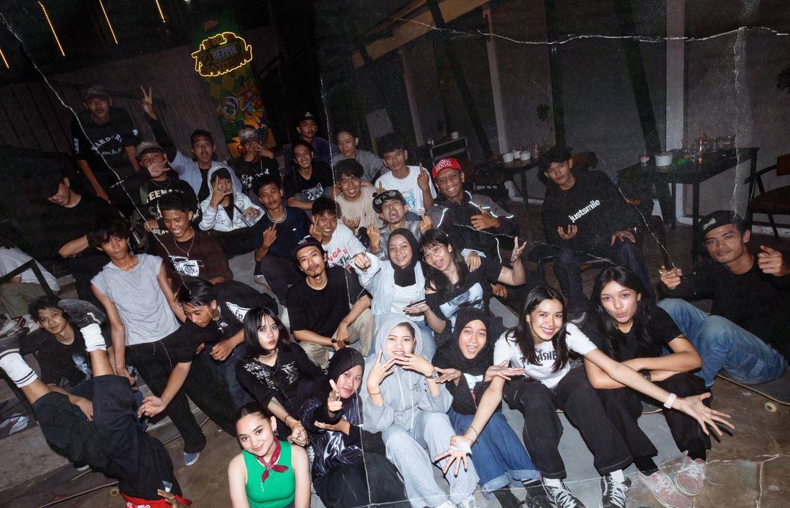
Vision
+ Mission
+ Vision
Membangun ekosistem skateboard yang solid, progresif, dan berdampak di Bantul, serta menjadi inspirasi bagi komunitas skateboard di wilayah lain.
+ Mission
- Menyediakan ruang dan kegiatan yang aman, suportif, dan menyenangkan bagi para skater.
- Mendorong pengembangan bakat generasi muda melalui latihan rutin, kolaborasi, dan kompetisi.
- Menjalin relasi antar komunitas lokal dan regional dalam semangat brotherhood dan sportivitas.
- Mengangkat eksistensi skateboarding sebagai bagian dari budaya urban dan ekspresi kreatif anak muda.
Activities
+ Programs
Aktivitas komunitas mencakup sesi latihan rutin, event komunitas, hingga kegiatan terbuka untuk umum.
Menciptakan ekosistem yang mendukung pertumbuhan skill sekaligus mempererat kebersamaan. Program-program ini menjadi wadah bagi siapa saja untuk terlibat dalam budaya skateboard yang hidup dan inklusif.
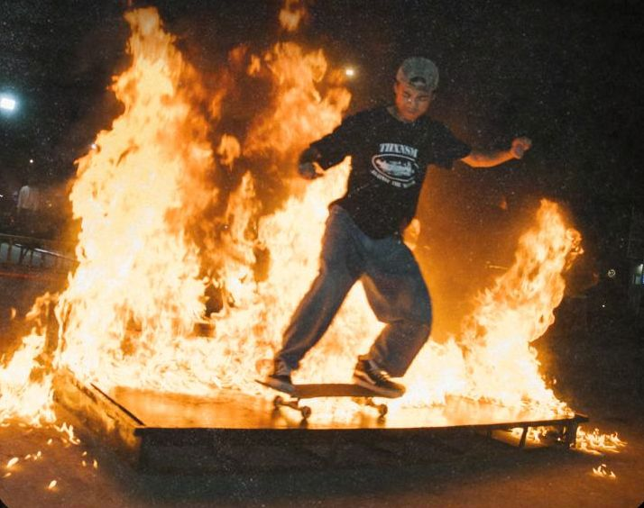
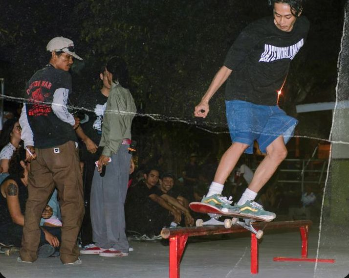
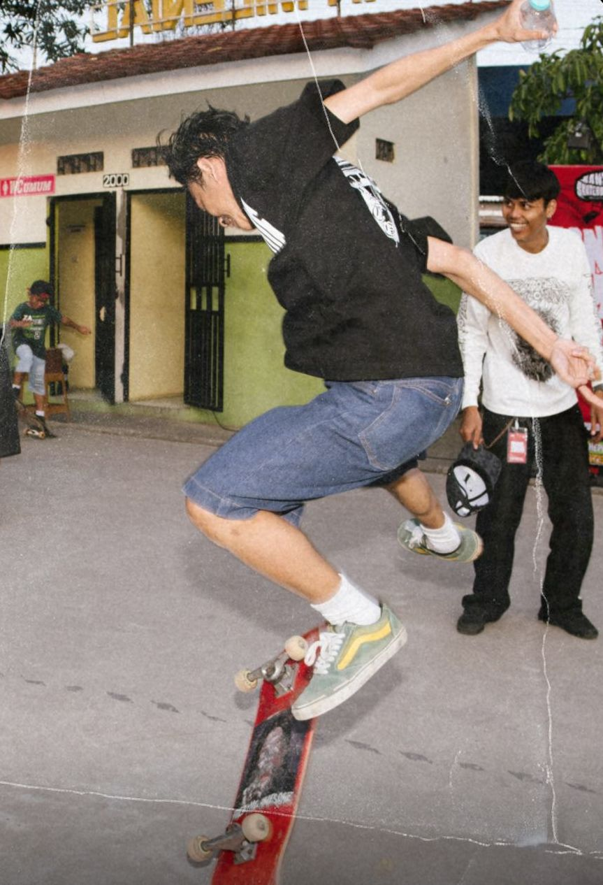
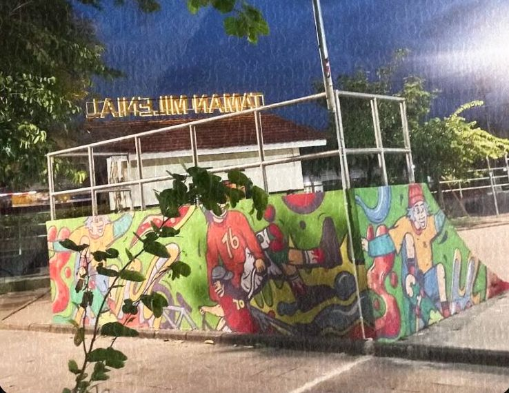
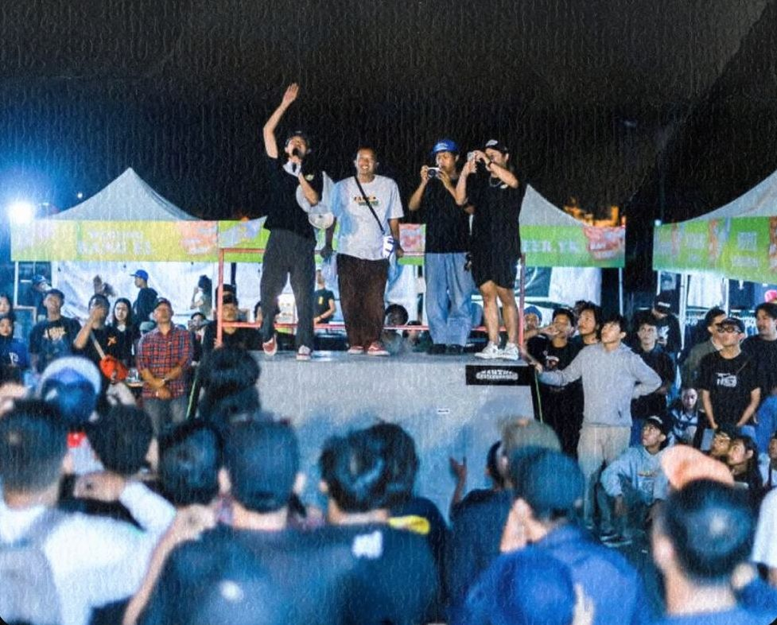
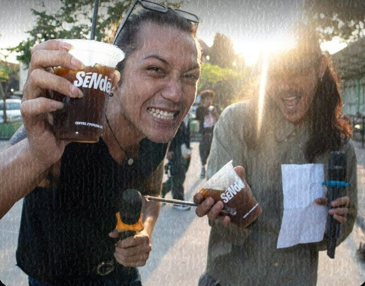
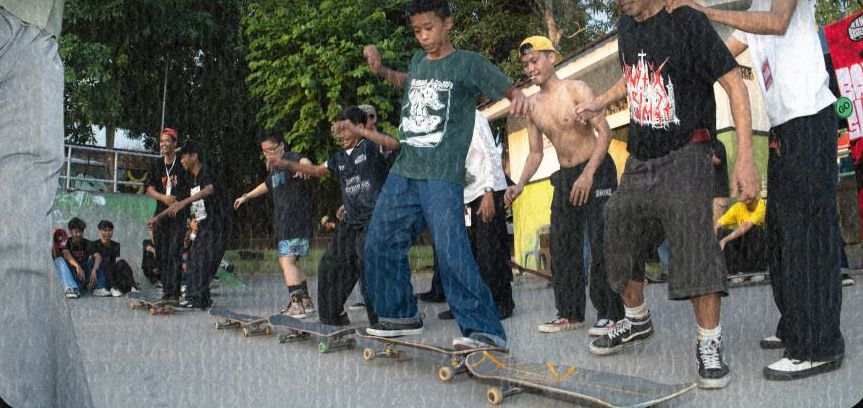
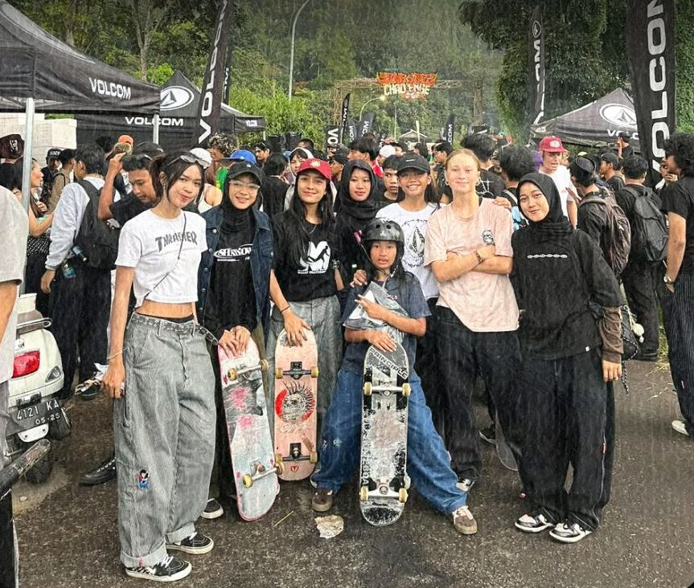
Member
Achievements
Sejak berdiri lebih dari lima tahun lalu, komunitas ini berkembang dari sekelompok kecil teman menjadi kolektif skateboard yang aktif dan solid.
Pencapaian anggota diakui baik secara individu maupun kolektif, mencerminkan konsistensi partisipasi, perkembangan skill, serta kontribusi dalam menjalankan peran masing-masing di setiap sesi dan event komunitas.
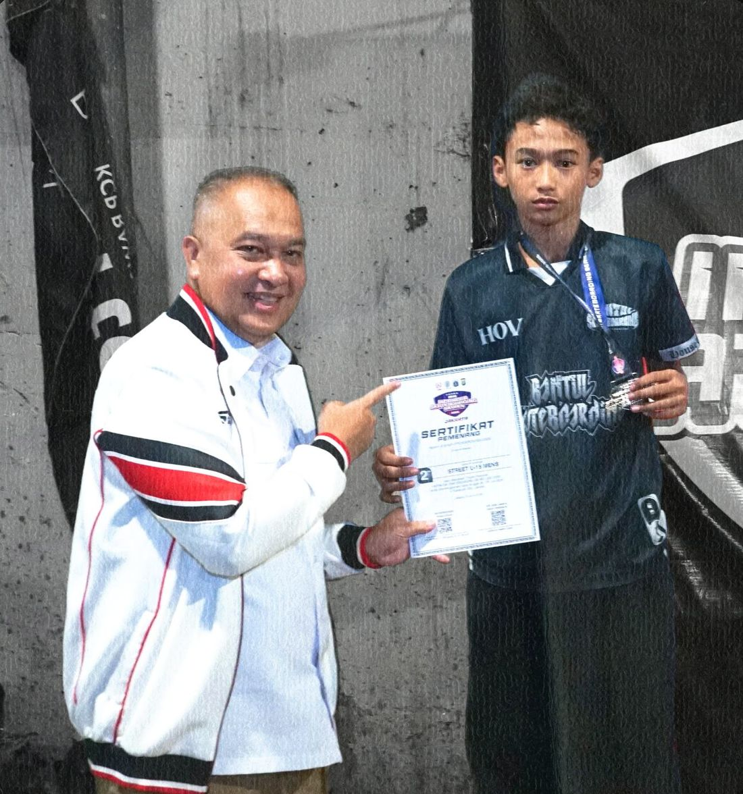
Structure
+ Teams
Pengelolaan komunitas bersifat kolaboratif dan fleksibel, di mana setiap anggota memiliki peran (jobdesk) masing-masing dalam menjalankan kegiatan. Koordinasi sesi, event, dan keputusan bersama dilakukan secara bergotong royong, dengan ruang bagi setiap orang untuk berkontribusi sesuai kemampuan dan tanggung jawabnya.
Event
History
Komunitas Bantul Skateboarding telah menjalin kolaborasi dengan sejumlah brand dalam berbagai kegiatan, mulai dari dukungan event, produk, hingga aktivitas bersama lainnya. Kolaborasi ini tidak hanya memperkuat eksistensi dan jangkauan komunitas, tetapi juga membuka lebih banyak peluang bagi anggota untuk berkembang dan dikenal lebih luas, baik di Bantul maupun ke wilayah lain.
Gallery
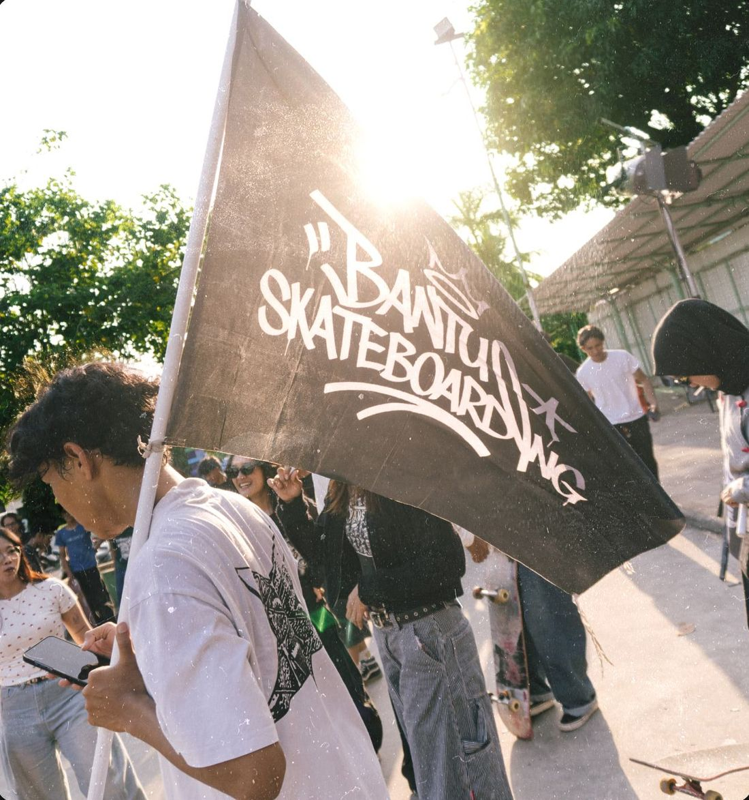
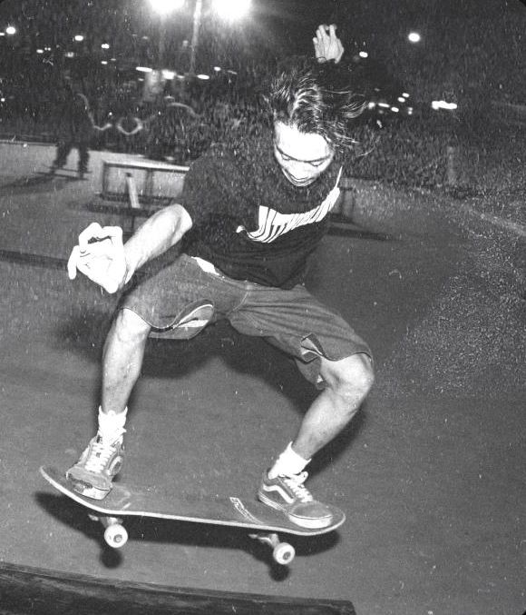
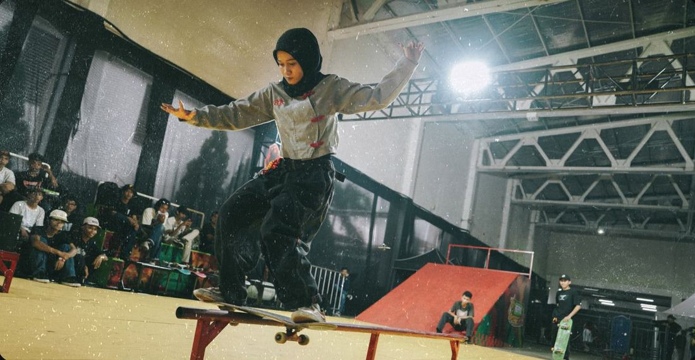
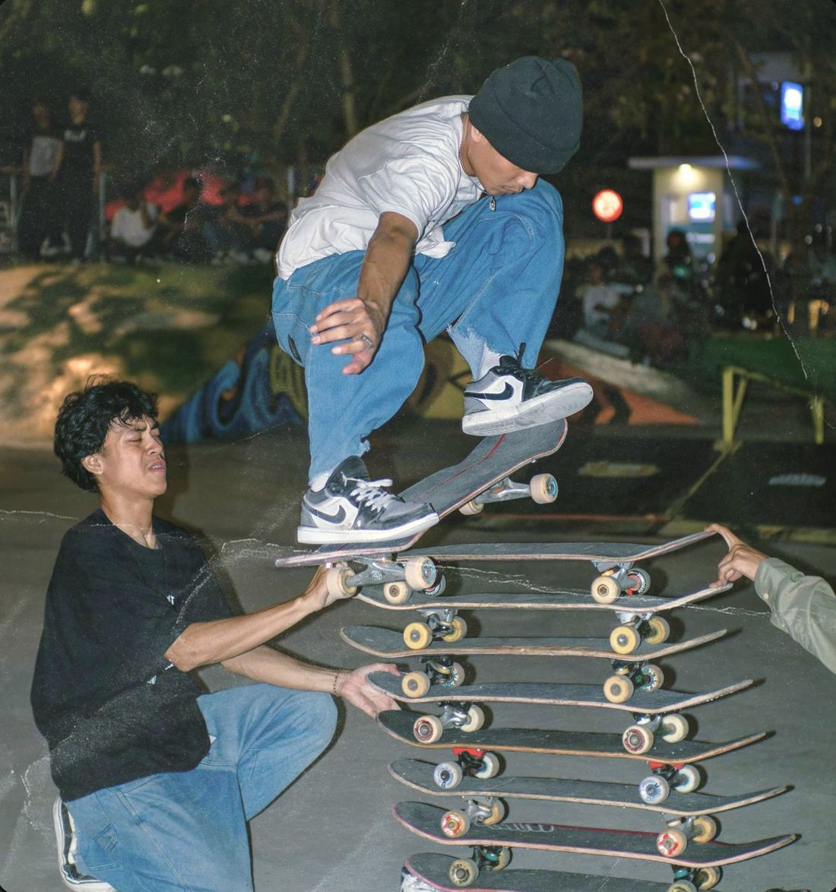
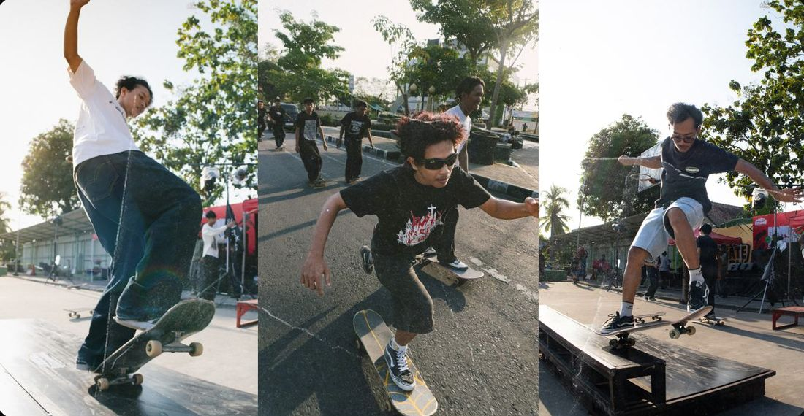
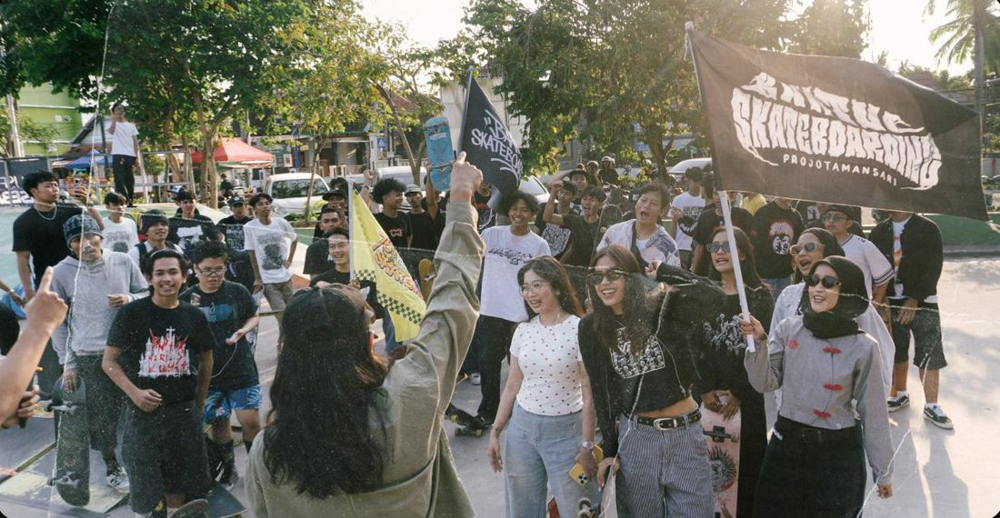
Contact
+ Socials
Media sosial komunitas
- @bantulskateboarding
@girlsbantulskateboarding - TikTok
- @bantulskateboarding
Contact person
- Nama
- Danar Riyandi Wicaksono
- @dnrrnd1__
- +62 831-1303-0703
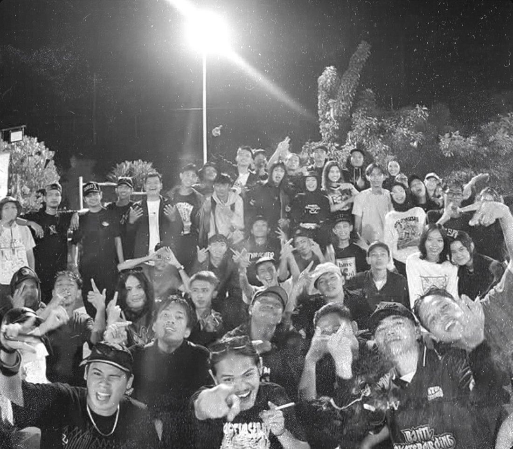